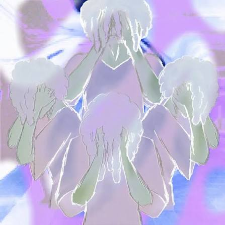
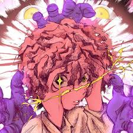
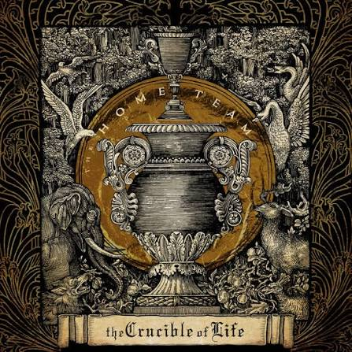
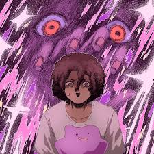

My Collection Of Favorite Song Covers
This is a curated collection of songs that I love, ones that have shaped how I think and feel even if only for but a moment.

Dum Az Rox
Song - Katchum
This is one of the songs that I listen to whether I am on a high point in life or a low point. The song always helps me feel connected to my emotions and gives me a sense of weightlessness with the vocals and a surprisingly silly feeling as I listen to the lyrics. I found this song through TikTok, specifically for an edit of a character struggling against unbelievable odds with a smile on their face that resonated with me.

Fall Short
Song - Katchum
This is a song about desperation, mainly towards the person the singer is chasing and how they always fall short of expectations. This song is like a sort of outlet for the singer, and realizing that made me love the song even more than when I first heard it. We've all had moments where we feel like we're falling short, and this song reminds me that it's okay to feel that way. More improtantly, it shows that everyone shares similar experiences and that is something we can relate amongst all of us.

Roommates
Song - The Home Team
This song was one that REALLY struck a chord with me, especially because it reminds me of the experiences that I've had with my brothers, since they're about the only probelmatic roommates that I've had. Does that make sense? Not really, but I like it because of that and that's why the song's here. It's also really good, but of course it is. It's in this collection for a reason.
High On My Lows
Song - Sawyer Hills
To be honest I had deeply debated about putting this song on this list; not due to the song itself, but because of the memories and emotions it evokes. It's a song that I put on when I feel like everything around me is breaking down or when I feel like everything inside me is. Listening to the lyrics alone don't show how it might invoke such feelings, but the experiences that I've had while listening to it do. I connect with this song deeply and that's why it here. (It's also really good.)

I Wish we Suffered for Longer
Song - Ketchum
Okay, to be honest, despite the name it's actually a really upbeat and catchy song that I put on every once and a while because it has a really catchy melody and makes me feel like moving my body. The lyrics are a little heavy at points because the song is about wanting to be with someone despite the relationship being toxic, yet despite that it makes me feel pretty good at times.
Earrings
Song - Malcom Todd
This is a pretty short song about how the narrator is not going to be able to see someone again, and what had sparked that realization was the fact the he remembered he left his earrings on her bed. It's a pretty catchy song, one that even made its rounds on Tiktok for quite a while and even is still popular today. The song is mainly here because of memorable it is, and the feelings that it sparks up in my chest because of how much emotion the artist put into their words.